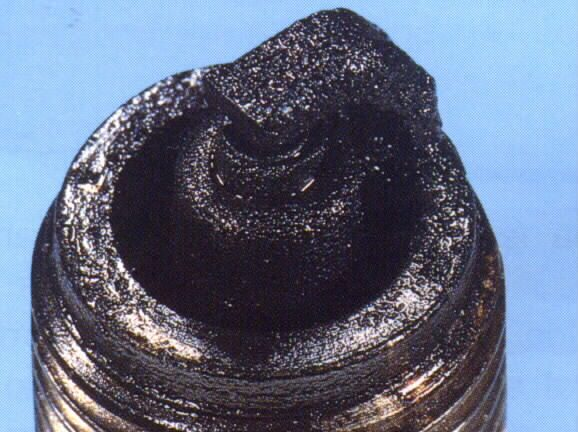

Photo: Dan's Motorcycle Repair Course (dansmc.com), used with permission.
Home mechanic (basic tools) · Time: 10 to 15 min, plus a short ride (estimate)
The colour and deposits on the plug's firing end show how the engine has been burning its fuel. MAVCC puts plug inspection first in any tune-up because the old plug gives clues. Reading a plug is a screening check, not proof: confirm the cause with a test before you replace a part.
Safety
- Remove the plug from a cold or warm engine, not a hot one.
- Key OFF.
Steps
- For a fair reading, ride the bike for a few minutes at steady speed, then switch off with the key (do not let it idle long). Long idling and short trips make any plug look sooty.
- Let it cool a little, then remove the plug: Remove, check, gap and fit a spark plug.
- Look at the insulator nose (the white ceramic around the centre electrode), the electrodes and the metal shell. Use a torch.
- Compare with the table below.
| What you see | What it usually means | Next step |
|---|---|---|
| Light grey, tan or light brown, dry | Normal mixture and correct heat range | Gap it and refit |
| Dry, black, soft soot | Rich mixture: choke left on, blocked air filter, high float level, leaking injector; or a plug too "cold"; or a weak spark | Spark plug is black and sooty |
| Wet, black and oily, smells of oil | Oil reaching the cylinder: worn rings, valve stem seals, overfilled oil; on a two-stroke, too much oil | Spark plug is wet with oil |
| Wet and smells of petrol | Flooded, or no spark | Engine is flooded and smells of fuel |
| Chalk white, blistered, or tiny metal beads | Overheating: lean mixture, air leak, wrong heat range, timing too far advanced | Spark plug is white or blistered. Do not ride hard |
| Electrodes rounded or worn thin | Old plug | Replace |
| Cracked insulator | Damaged plug, often from dropping it or wrong tools | Replace; check for broken pieces in the engine with a workshop |
- Two-stroke plugs are often darker brown than four-stroke plugs because of the oil in the fuel. Compare with a known good bike of the same model if you can.
- On fuel-injected bikes, a black plug together with an engine warning light suggests a sensor fault. See Read engine fault codes (fuel injection).
Check your work
- After fixing the cause, fit a clean plug, ride again and re-read it. The colour should move toward light grey or tan.
If it did not fix the problem
- Black plug and black smoke: Black smoke from the exhaust.
- Oily plug and blue smoke: Blue or grey smoke from the exhaust.